A cedar-framed weather screen that hangs flush on the wall, wakes when someone walks up, and listens for “Hey daPhox.” Every part you bought, where it goes, and how to wire it.
16-9/16″ × 10-13/16″Outside of frame
1-3/4″Total depth, back panel included
1-1/4″ faceCedar rail width seen from the front
2 cordsRun inside the wall to an outlet
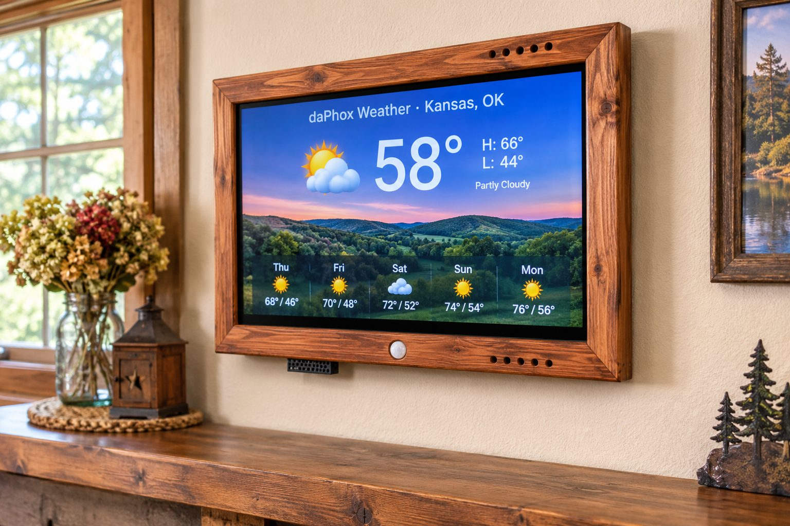
AI picture
The finished display on the wall.
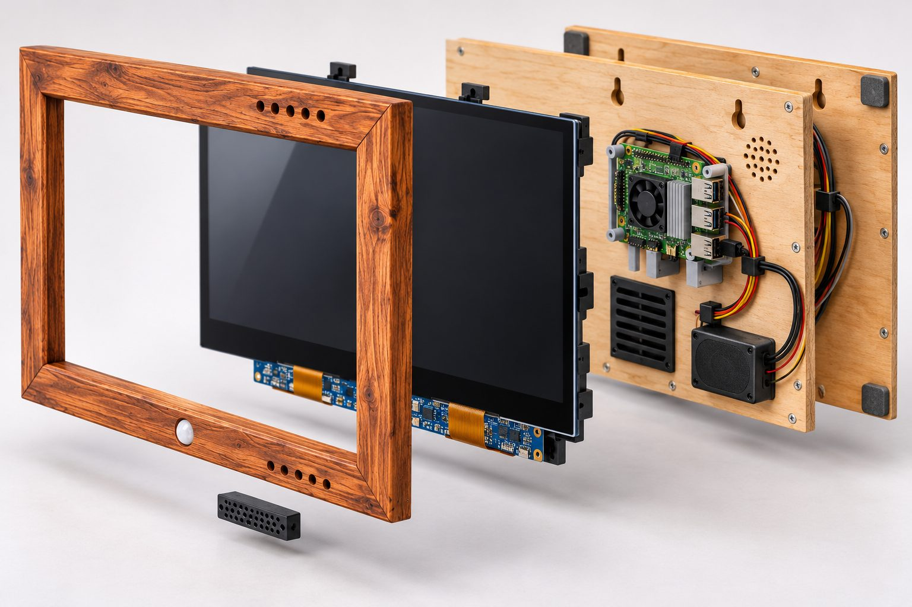
AI picture
How it stacks: frame, screen, back panel with the electronics. The picture shows two back panels and extra vent holes; the build has one panel.
Amazon linksOn your Android phone, the Amazon links open in Chrome instead of the Amazon app. If one opens somewhere else, tap Copy link and paste it into Chrome.
Check the boxWaveshare usually includes a 12V power supply, an HDMI cable and a touch USB cable with the screen. Use theirs if they fit. The 1 ft cables above keep the inside tidy.
2
Print the parts
Kobra X, PLA. Tap a file name below to download it.
Holds the Pi on tall posts with its fan facing the wall. Its square window is your cutting template for the back-panel vent. The little arrow points to the top of the frame.
Press-fits into the 2″ vent in the back panel. Pop it out to reach the Pi's sensor pins without opening the frame.
3
Bench-test the electronics
Make sure everything works before it goes in the wood.
CarefulThe screen is bare glass with the driver board exposed on the back. Pick it up by the glass edges only, and never press on the ribbon cables.
4
Mill the cedar rails
Table saw. One 8 ft 2×4 makes all four rails, with a spare strip left over.
SafetyBoth cuts leave the waste on the side away from the fence, so it can't get trapped and kick back. Use a push stick, because these strips are narrow.
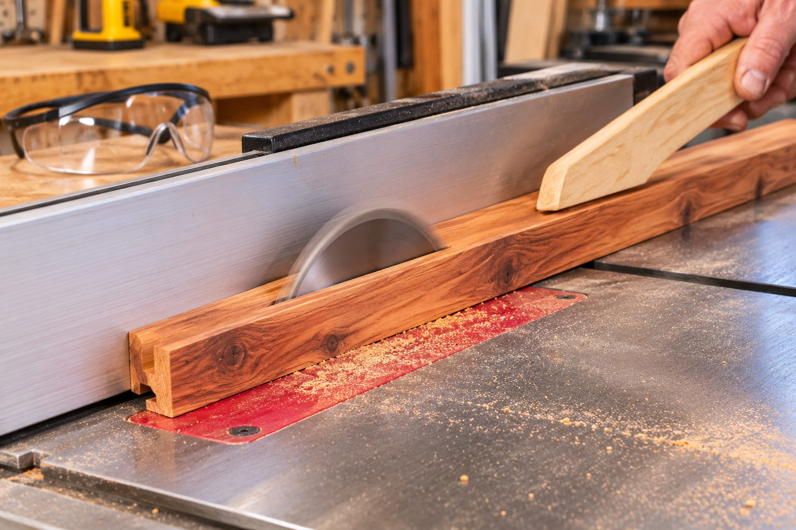
AI picture
Cutting the rabbet with a push stick.
5
Miter, dry-fit, glue
Miter saw at 45°. Measure the long point on the outside edge.
Screen orientationThe glass has a thin black border at the top (7 mm) and a wider one at the bottom (21 mm). Face-down in the frame, the blue driver board should sit in the lower half.
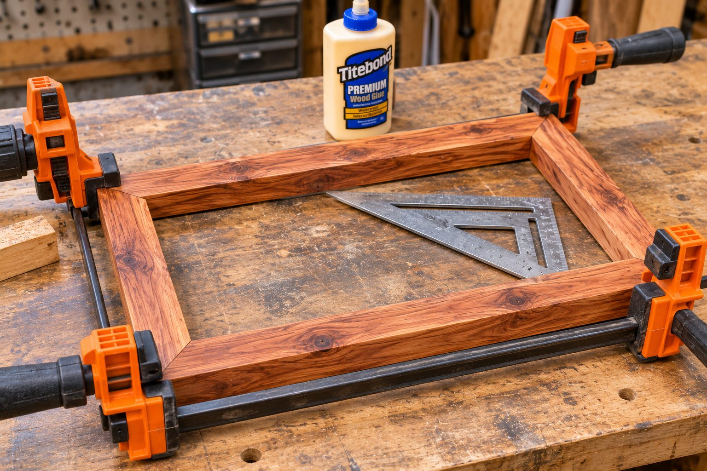
AI picture
Glue-up: clamps snug, check that it's square.
6
Drill holes and route keyholes
Draw a center line across the top and bottom rails first. Every position is measured from it, as seen from the front.
Hole
Where (from center, viewed from front)
Size / depth
PIR sensor
Bottom rail front face, on center, 1/2″ up from the bottom edge
Gauge bit · straight through 1-1/2″
PIR wire channel
Back face of the bottom rail, from the PIR hole up into the pocket
3/8″ wide × 1/4″ deep (chisel)
Mic cable
Underside, 1-1/4″ left, centered front-to-back
1/2″ · up into pocket (1″)
Mic cover screws
Set the printed cover with its right end 3/8″ left of center, then mark through its 2 holes
3/32″ pilot · 1/2″ deep
Intake vents (8)
Underside, 3-1/16″, 3-9/16″, 4″, 4-1/2″ right; rows 11/16″ and 1-1/4″ from the front face
3/8″ · up into pocket
Exhaust vents (12)
Top edge, 2-3/8″, 2-15/16″, 3-9/16″, 4-1/8″, 4-3/4″, 5-5/16″ right; rows 11/16″ and 1-1/4″ from the front face
3/8″ · down into pocket
Keyholes (2)
Back of the top rail, 5-1/8″ each side of center, plunged 11/16″ down from the top edge, slot toward the top
3/8″ keyhole bit · 3/8″ deep · 5/16″ slot
How it breathesThe Pi faces the wall. Its fan pulls cool room air through the 2″ grille in the back panel; the 3/8″ felt bumpers leave a gap behind the frame for that air. Warm air rises out the top vents, and the bottom vents let more air in.
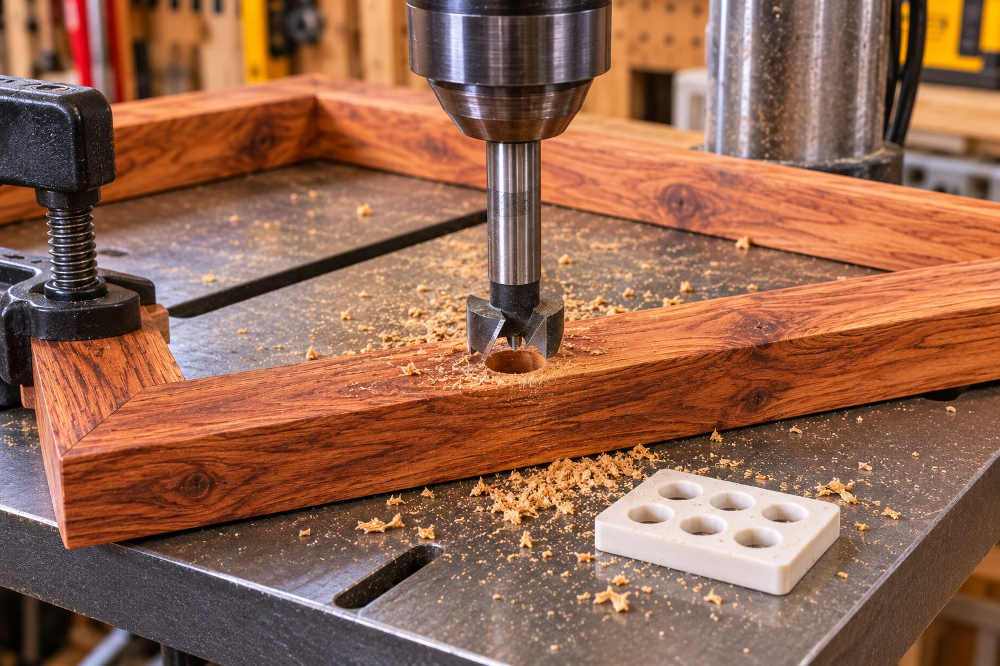
AI picture
Drilling with the printed gauge on hand. Your sensor hole goes into the front face of the bottom rail, not the top as shown.
7
Rustic texture and finish
Brush, ease, oil.
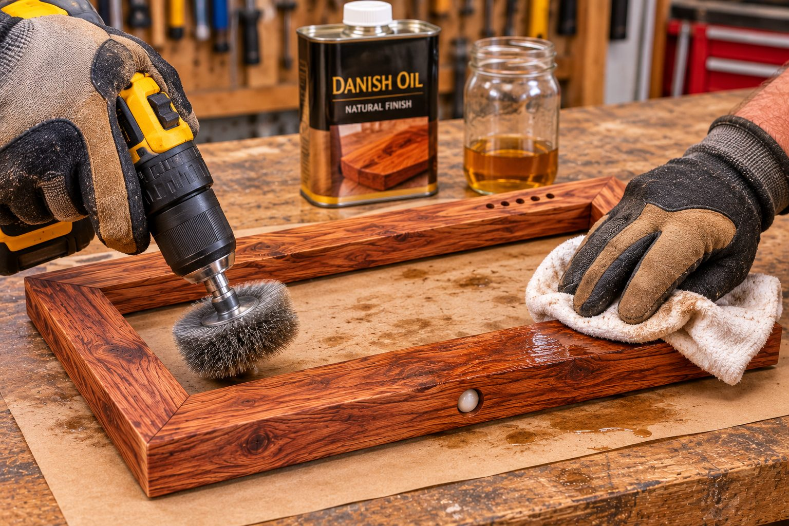
AI picture
Wire-brush along the grain, then wipe on Danish oil.
8
Make the back panel
1/4″ plywood, cut to 16-9/16″ × 10-13/16″. All positions below are as seen from the back.
Item
Position from panel center (seen from back)
Grommet hole, 1″
1-9/16″ left, 13/16″ up
Pi plate (inside face)
Centered 3-7/8″ left, 2-1/4″ down, arrow toward the top. Its 4 screws go in from the back
Fan / GPIO vent, 2″ square
Centered 4-1/16″ left, 2-11/16″ down. Trace it from the plate's window
Speaker (inside face) + grille
Centered 5-1/2″ right, 2-3/16″ up. 13 holes, 3/16″, in a 1-1/8″ circle
Press blocks (6, inside face)
4 corners 6-11/16″ left/right and 3-15/16″ up/down. 1 top-center (4-1/8″ up). 1 at 3/4″ left, 4-1/8″ down. Keep blocks off the screen's ribbon cables
Keyhole windows
Line up with the routed keyholes: drill 1/2″ at the entry, file a 1/4″ slot toward the top
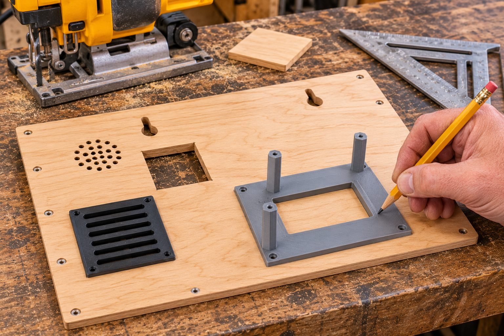
AI picture
Tracing the plate's window to mark the 2″ vent. The picture's layout is simplified; follow the diagram above.
9
Wiring
Six jumpers for the motion sensor. Everything else is a plug-in cable.
Complete wiring diagram
Every part and every connection. Lines are colored by type, and the six sensor wires use their own colors.
Motion sensor close-up
PIR leg
Name
Goes to Pi pin
Wire
1
SENS (sensitivity)
Pin 9 · GND
brown
2
OEN (enable)
Pin 17 · 3.3V
orange
3
VSS (ground)
Pin 6 · GND
black
4
VDD (power)
Pin 1 · 3.3V
red
5
REL (motion signal)
Pin 11 · GPIO17
yellow
6
ONTIME
Pin 14 · GND
gray
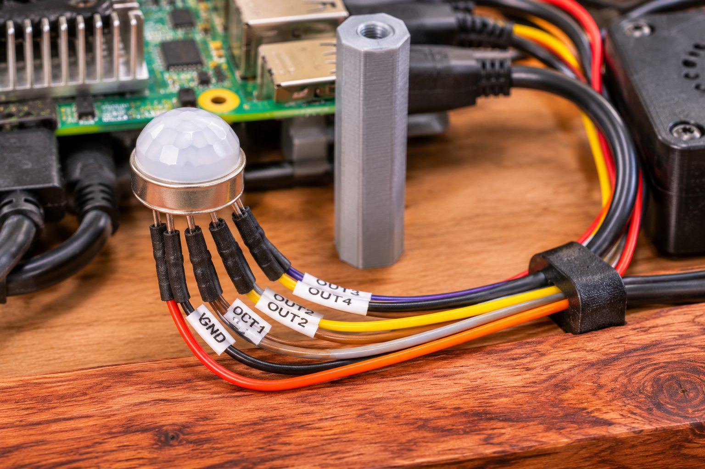
AI picture
Jumpers slid onto the sensor legs with heat-shrink. Ignore the label tags in this picture. Label yours with the leg names from the table above.
3.3V onlyNever use the Pi's 5V pins (2 and 4) for this sensor. Leg 1 is the leg beside the little metal tab on the sensor's can. Count clockwise from there, looking at the legs.
Loose legsThe PIR legs are thin (0.45 mm), so jumpers can slip off. Slide each jumper on, then add a small piece of heat-shrink or a dab of hot glue. Keep the six legs from touching each other.
Plug-in connections
From
To
Cable
Pi HDMI 0 (next to USB-C)
Screen HDMI port
1 ft micro-HDMI → HDMI
Pi USB 2 port (black)
Screen Touch micro-USB port
1 ft USB-A → micro-USB
Pi USB 2 port (black)
ReSpeaker USB-C
1 ft USB-A → USB-C (through the 1/2″ rail hole)
ReSpeaker speaker connector
Speaker
Speaker's own lead (through the same hole)
Screen DC jack
12V adapter
Out through the grommet
Pi USB-C
27W Vemico supply
Out through the grommet
Active Cooler
Pi FAN connector
Its own short lead
Voice tipThe speaker plugs into the ReSpeaker, not the screen. The ReSpeaker then knows what daPhox is saying and can filter its own voice out while listening for “Hey daPhox.”
10
Install everything in the frame
Frame face-down on a towel. View below is from the back, with the back panel off.
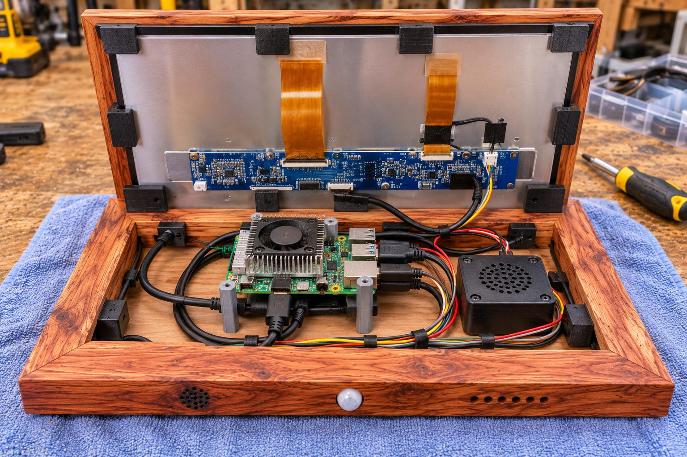
AI picture
Everything connected before closing up. In the real build the Pi's fan faces the back panel, and the parts mount on the back panel.
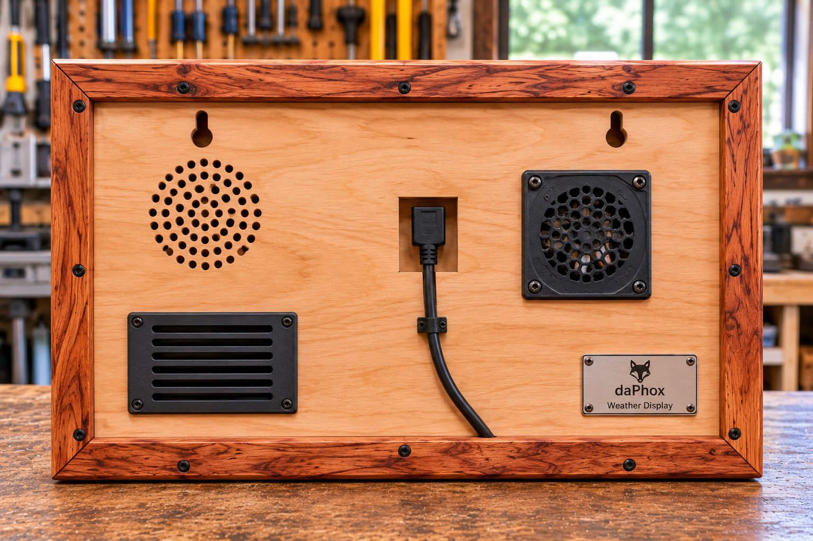
AI picture
The finished back. The nameplate is a nice touch to add. Use the back-panel diagram in step 8 for the real hole layout.
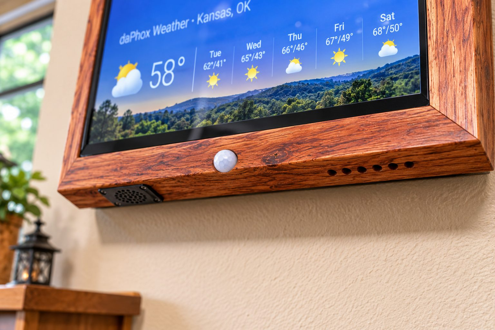
AI picture
Bottom rail: sensor dome on the front face, mic cover underneath.
11
Test the sensor, mic and speaker
Open Terminal on your Mac and connect with ssh daphox.local, or use a keyboard on the Pi.
Motion sensor
python3 -c "from gpiozero import MotionSensor; from signal import pause
p = MotionSensor(17)
p.when_motion = lambda: print('motion')
p.when_no_motion = lambda: print('clear')
pause()"
Walk past. You should see motion, then clear about 2 seconds after you stop. Press Ctrl+C to quit.
Dogs setting it off?The sensor is at full sensitivity now (leg 1 to ground). Leg 1 can take a small resistor pair to make it less sensitive. Ask me for the exact values when you get there.
12
Hang it
Two screws, two wall plates, no electrician.
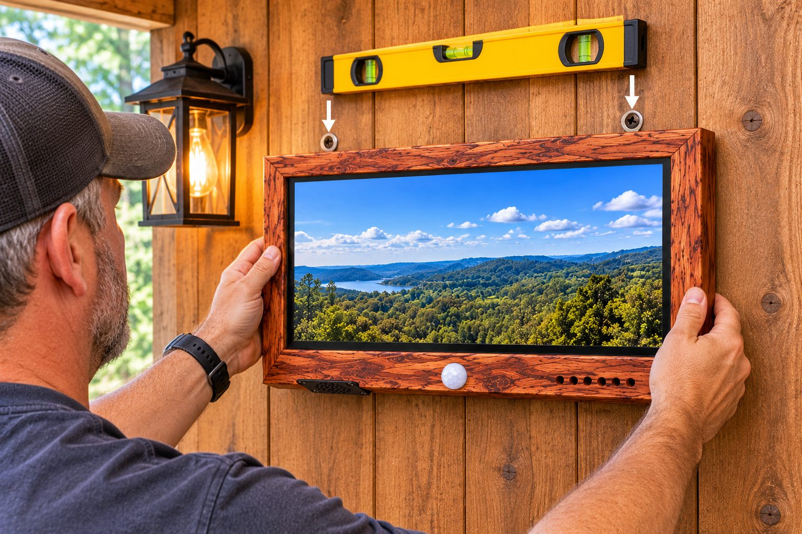
AI picture
Hooking the keyholes over the two screws, checking level.
Only low-voltage in the wallRun only the 12V and USB-C cords inside the wall. Never put a plug-in extension cord inside the wall. If the cords don't reach, use a USB-C (5A) extension and a 3.5 × 1.35 mm DC extension.
NextPi setup, so it starts on boot and recovers after power loss, is step 2 of the build plan in your daphox-display repo. Motion dimming is step 3.